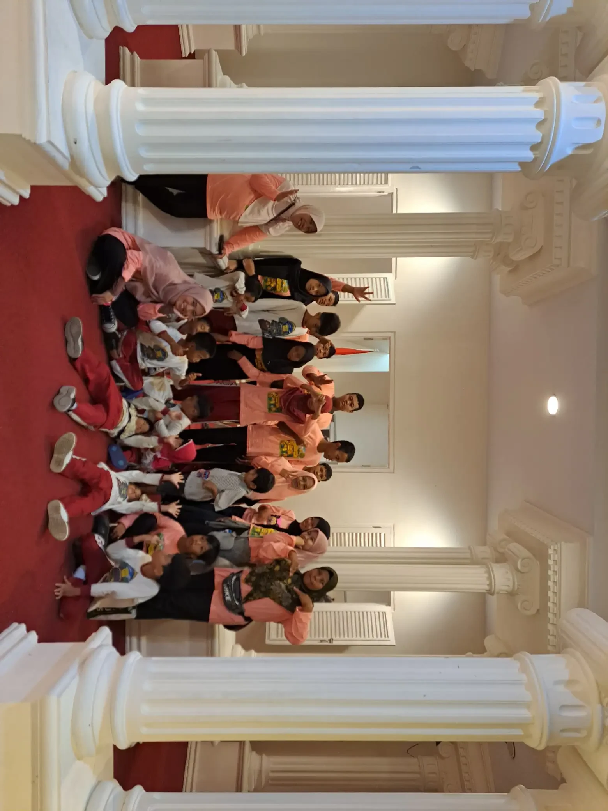
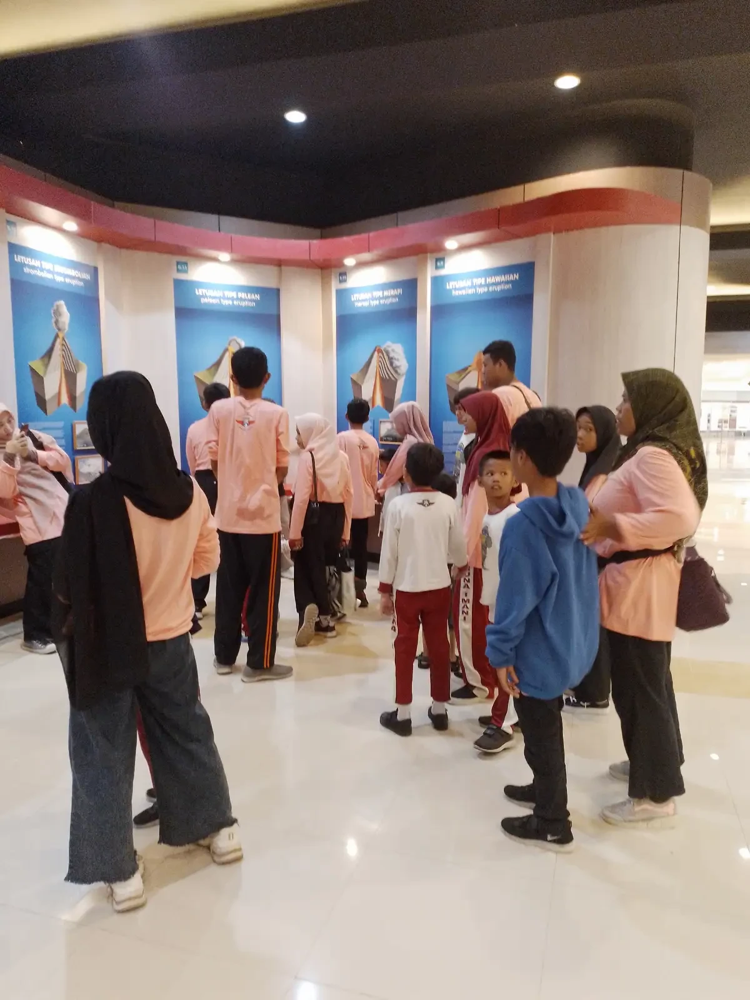
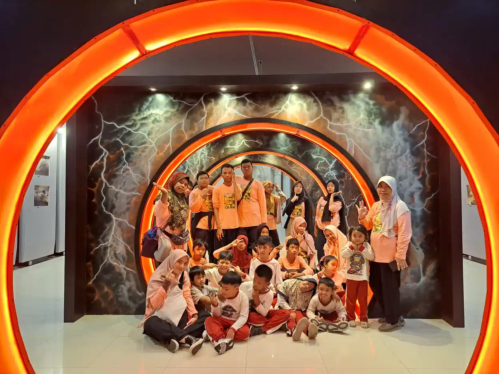
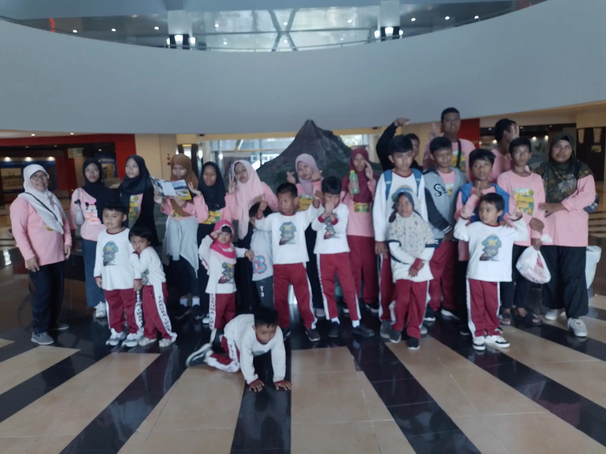

ABK itu seperti apa? ABK adalah anak berkebutuhan khusus, yaitu anak yang memerlukan dukungan, penyesuaian, atau layanan tambahan agar dapat belajar, bermain, berkomunikasi, berpartisipasi, dan berkembang sesuai potensinya. Kebutuhan itu dapat berkaitan dengan aspek fisik, sensorik, komunikasi, intelektual, sosial, emosi, perilaku, kesehatan, kesulitan belajar, atau potensi kecerdasan dan bakat istimewa.
ABK bukan nama satu diagnosis dan bukan ukuran nilai seorang anak. Istilah ini membantu keluarga, guru, dan layanan pendukung membicarakan kebutuhan yang perlu diakomodasi. Setiap anak tetap memiliki identitas, minat, kelebihan, hak, dan suara. Karena itu, pembahasan tentang ABK sebaiknya tidak berhenti pada daftar kekurangan, tetapi bergerak pada pertanyaan yang lebih berguna: dukungan apa yang membuat anak dapat berpartisipasi dengan aman dan bermakna?
Artikel ini menjelaskan pengertian ABK dengan bahasa sederhana, contoh kebutuhan yang beragam, cara membedakan pengamatan dari diagnosis, pilihan dukungan di rumah dan sekolah, serta langkah awal orang tua. Untuk istilah dasar yang lebih ringkas, Anda juga dapat membaca artikel pengertian ABK dan ABK adalah anak berkebutuhan khusus.
Daftar Isi
ABK Itu Seperti Apa? Definisi yang Berpihak pada Kebutuhan
Secara sederhana, anak berkebutuhan khusus adalah anak yang membutuhkan dukungan berbeda atau tambahan dibandingkan kebanyakan anak seusianya untuk mengakses kegiatan sehari-hari. Dukungan itu dapat berupa alat bantu, cara komunikasi alternatif, penyesuaian lingkungan, instruksi yang lebih terstruktur, waktu belajar yang fleksibel, pendampingan, atau layanan kesehatan dan pendidikan. Kebutuhan khusus tidak otomatis berarti anak tidak mampu. Sering kali, hambatan muncul karena lingkungan belum menyediakan cara yang sesuai untuk mengakses kegiatan.
Buku Psikologi Anak Berkebutuhan Khusus karya Nur Eva dari Universitas Negeri Malang menjelaskan bahwa kebutuhan pendidikan anak dapat berbeda sehingga materi, program, fasilitas, atau layanan perlu disesuaikan. Cakupannya tidak hanya hambatan fisik dan sensorik, tetapi juga kebutuhan belajar serta potensi tinggi. Istilah lama di beberapa literatur perlu dibaca dengan konteks zamannya, bukan dijadikan label yang merendahkan. Dalam pendampingan sehari-hari, makna ABK tidak hanya berisi kondisi anak, tetapi juga peran keluarga, sekolah, masyarakat, dan layanan profesional untuk mengurangi hambatan.
Dalam praktik, dua anak dengan diagnosis yang sama dapat memerlukan strategi berbeda. Seorang anak mungkin membutuhkan dukungan komunikasi visual, sementara anak lain lebih terbantu oleh waktu transisi yang panjang atau lingkungan yang tidak bising. Karena itu, pendekatan terbaik dimulai dari kebutuhan fungsional yang terlihat, bukan dari asumsi tentang label.

ABK Bukan Label Nilai Anak
Ketika seseorang bertanya ABK itu seperti apa, jawaban yang kurang tepat biasanya hanya menyebut keterbatasan. Cara ini dapat membuat anak seolah-olah hanya dilihat dari diagnosis atau kesulitannya. Padahal kebutuhan dukungan tidak menghapus kemampuan anak untuk belajar, membuat pilihan, menikmati pertemanan, berkarya, dan berkontribusi. Bahasa yang digunakan orang dewasa juga memengaruhi cara sekolah dan masyarakat memperlakukan anak.
Gunakan bahasa yang menghormati anak. Sebut kebutuhan atau hambatan secara spesifik bila memang relevan, misalnya anak membutuhkan instruksi visual, waktu proses lebih panjang, atau akses komunikasi. Hindari menyamakan anak dengan diagnosisnya dan jangan menganggap semua anak dalam satu kelompok memiliki perilaku yang sama. Dalam percakapan keluarga, fokuskan catatan pada situasi, pemicu, kekuatan, dan dukungan yang membantu.
Sudut pandang ini sejalan dengan pendidikan inklusif. Sekolah tidak hanya meminta anak menyesuaikan diri dengan sistem yang sudah ada, tetapi juga mengevaluasi apakah materi, ruang, jadwal, komunikasi, dan cara penilaian dapat diakses. Orang tua dapat membaca panduan pendidikan inklusi dan sekolah inklusi di Sleman untuk memahami contoh dukungan yang lebih konkret.
Intinya: ABK adalah anak dengan kebutuhan dukungan tertentu, bukan anak yang nilainya lebih rendah. Tujuan pendampingan bukan menghapus keunikan anak, melainkan membuka akses agar anak dapat tumbuh dan berpartisipasi.
Ragam Kebutuhan yang Mungkin Dimiliki Anak
Ragam ABK sangat luas. Klasifikasi dapat membantu tenaga profesional merancang layanan, tetapi tidak boleh dipakai untuk menyederhanakan pengalaman setiap anak. Beberapa anak memiliki satu kebutuhan utama, sedangkan yang lain mempunyai kombinasi kebutuhan. Ada juga kebutuhan yang tidak langsung terlihat, seperti kesulitan memproses bahasa, regulasi emosi, perhatian, atau kelelahan akibat kondisi kesehatan.
| Area kebutuhan | Contoh dukungan | Hal yang perlu diamati |
|---|---|---|
| Sensorik dan fisik | Alat bantu, akses ruang, posisi duduk, atau adaptasi aktivitas | Akses melihat, mendengar, bergerak, dan menjaga stamina |
| Komunikasi dan bahasa | Bahasa isyarat, gambar, gestur, perangkat komunikasi, atau waktu tunggu | Cara anak memahami pesan dan menyampaikan pilihan |
| Belajar dan perhatian | Instruksi bertahap, contoh konkret, pengulangan, atau waktu tambahan | Materi yang mudah diakses dan kondisi yang membantu fokus |
| Sosial, emosi, dan perilaku | Rutinitas, dukungan transisi, ruang tenang, dan strategi regulasi | Pemicu stres, cara meminta jeda, dan pola pemulihan |
| Potensi tinggi atau bakat istimewa | Pengayaan, tantangan yang sesuai, dan dukungan sosial-emosional | Minat mendalam, kebutuhan tantangan, serta keseimbangan aktivitas |
Tabel tersebut bukan alat diagnosis. Ia hanya membantu keluarga memulai percakapan yang lebih terarah. Misalnya, anak yang tampak tidak mengikuti instruksi belum tentu tidak mau belajar. Ia mungkin membutuhkan kalimat yang lebih singkat, gambar pendukung, atau waktu untuk memproses bahasa. Anak yang menghindari keramaian belum tentu tidak ingin bersosialisasi. Ruang yang terlalu bising, cahaya menyilaukan, atau perubahan mendadak dapat menjadi hambatan.
Contoh Dukungan Sesuai Kebutuhan Anak
Dukungan yang baik bersifat individual, dapat dicoba, dan dievaluasi. Keluarga tidak harus menerapkan semua strategi sekaligus. Mulailah dari satu hambatan yang paling mengganggu partisipasi anak, lalu ukur perubahan dengan catatan sederhana. Tanyakan kepada anak, bila ia dapat menyampaikan pendapat, dukungan apa yang terasa membantu dan dukungan apa yang justru melelahkan.
Untuk kebutuhan komunikasi, gunakan kata kunci yang konsisten, gambar urutan kegiatan, pilihan terbatas, atau alat komunikasi alternatif bila direkomendasikan profesional. Untuk kebutuhan belajar, pecah tugas menjadi langkah kecil, berikan contoh, dan beri jeda. Untuk kebutuhan sensorik, perhatikan suara, cahaya, tekstur, keramaian, serta waktu pemulihan. Untuk kebutuhan sosial dan emosi, ajarkan cara meminta bantuan dan menyediakan tempat aman, bukan hanya menuntut anak untuk tenang.

Aktivitas keseharian juga dapat menjadi ruang belajar. Menyiapkan makanan, merapikan benda, memilih pakaian, atau mengikuti kegiatan seni dapat melatih perencanaan, motorik, komunikasi, dan kemandirian. Baca juga terapi okupasi untuk anak dan program pemberdayaan anak berkebutuhan khusus untuk melihat bagaimana keterampilan fungsional dapat dilatih secara bermakna.
Cara Mengenali Kebutuhan Anak Tanpa Mendiagnosis Sendiri
Orang tua adalah pengamat penting karena melihat anak dalam banyak situasi, tetapi pengamatan keluarga bukan diagnosis. Mulailah dengan mencatat apa yang benar-benar terjadi. Tuliskan kapan perilaku muncul, aktivitas sebelum kejadian, cara anak merespons, dukungan yang dicoba, dan hasilnya. Catatan seperti ini lebih berguna daripada kesimpulan umum seperti anak malas, nakal, atau tidak mau berusaha.
- Amati lintas situasi. Bandingkan rumah, sekolah, tempat ramai, waktu bermain, dan waktu istirahat. Perbedaan konteks dapat menunjukkan hambatan lingkungan.
- Catat kekuatan dan minat. Perhatikan aktivitas yang membuat anak fokus, nyaman, mampu menyelesaikan langkah, atau berinisiatif meminta bantuan.
- Diskusikan dengan pihak terkait. Guru, dokter anak, psikolog, terapis, atau tenaga profesional lain dapat membantu menentukan asesmen yang sesuai.
- Gunakan hasil asesmen untuk merancang dukungan. Hasil asesmen seharusnya menjawab apa yang membantu anak, bukan menjadi alasan untuk membatasi kesempatan tanpa dasar.
CDC mengingatkan keluarga untuk memantau perkembangan, membicarakan kekhawatiran dengan tenaga kesehatan, dan meminta skrining atau rujukan bila diperlukan. Checklist perkembangan bukan pengganti skrining terstandar dan bukan alat untuk menetapkan diagnosis. Di Indonesia, keluarga dapat mulai dari dokter anak, puskesmas, rumah sakit, psikolog, atau tim layanan sekolah sesuai kebutuhan dan akses setempat. Informasi tentang asesmen ABK dapat membantu menyiapkan pertanyaan.
ABK dan Pendidikan Inklusif
Anak ABK dapat belajar di satuan pendidikan khusus, sekolah reguler penyelenggara pendidikan inklusif, atau bentuk layanan lain yang sesuai hasil asesmen dan pilihan keluarga. Tidak ada satu lingkungan yang otomatis terbaik untuk semua anak. Kecocokan ditentukan oleh kebutuhan belajar, aksesibilitas, kompetensi pendidik, dukungan teman sebaya, keamanan, jarak, biaya, dan kemampuan sekolah berkolaborasi dengan keluarga.
Pendidikan inklusif bukan sekadar menempatkan anak di kelas yang sama. Sekolah perlu mengupayakan akses terhadap materi, komunikasi, aktivitas, penilaian, dan interaksi sosial. Penyesuaian dapat berupa instruksi visual, tempat duduk yang mendukung, pilihan cara menjawab, waktu tambahan, tujuan pembelajaran individual, pendampingan, atau rutinitas transisi. Kemdikdasmen menjelaskan bahwa pendidikan inklusif berupaya memastikan peserta didik penyandang disabilitas memperoleh pendidikan bermutu secara setara, dengan layanan yang akomodatif.

Orang tua dapat meminta pertemuan dengan wali kelas dan tim sekolah untuk membahas tujuan dukungan. Tanyakan bagaimana sekolah mengukur kemajuan, siapa yang menjadi kontak saat anak mengalami kesulitan, bagaimana prosedur keselamatan, dan bagaimana keluarga dapat menyampaikan perubahan. Kerja sama ini berbeda dari tuntutan agar anak selalu berperilaku seperti anak lain. Fokusnya adalah akses belajar dan kesejahteraan.
Peran Keluarga di Rumah
Keluarga tidak harus menjadi terapis sepanjang hari. Rutinitas yang dapat diprediksi, instruksi yang jelas, kesempatan memilih, dan hubungan yang hangat sudah merupakan fondasi penting. Buat target kecil yang relevan dengan kehidupan sehari-hari, misalnya meminta jeda, menyimpan alat makan, menunggu giliran, atau menyampaikan pilihan. Rayakan usaha dan strategi yang dipakai anak, bukan hanya hasil yang terlihat sempurna.
Jaga komunikasi antaranggota keluarga. Orang tua dapat membagi peran, menyimpan catatan bersama, dan menyepakati kalimat yang digunakan untuk memberi dukungan. Saudara juga perlu mendapat penjelasan yang sesuai usia agar memahami perbedaan tanpa merasa harus menjadi pengasuh utama. Keluarga yang lelah boleh meminta bantuan praktis dari kerabat, komunitas, sekolah, atau layanan profesional. Membaca panduan dukungan keluarga dan cara mengelola stres orang tua dapat menjadi langkah awal.
Jika keluarga sedang mencari lingkungan kegiatan, lihat informasi tentang program YUKA, dokumentasi kegiatan, atau kontak YUKA. Pastikan setiap layanan yang dipilih menjelaskan tujuan, metode, batas kompetensi, biaya, dan cara mengevaluasi kemajuan. Waspadai janji kesembuhan pasti atau program yang menyalahkan orang tua.
Kapan Perlu Mencari Bantuan Profesional?
Pertimbangkan konsultasi ketika ada kekhawatiran perkembangan, komunikasi, gerak, belajar, perilaku, kesehatan, makan, tidur, atau interaksi yang menetap dan mengganggu partisipasi anak. Segera cari bantuan medis bila ada kehilangan keterampilan yang sebelumnya sudah dimiliki, kejang, kesulitan bernapas, cedera, masalah makan atau minum yang berisiko, atau kondisi lain yang tampak gawat. Untuk situasi darurat, gunakan layanan kesehatan setempat.
Mencari bantuan bukan berarti orang tua gagal dan bukan berarti anak harus segera diberi label. Tujuan konsultasi adalah memahami kebutuhan, menyingkirkan kemungkinan yang perlu ditangani, serta menemukan dukungan yang aman. Bawa catatan pengamatan, riwayat kesehatan yang relevan, daftar obat bila ada, dan pertanyaan keluarga. Mintalah penjelasan yang dapat dipahami serta rencana tindak lanjut yang jelas.
Artikel ini adalah informasi edukasi umum dan tidak ditinjau oleh dokter atau psikolog untuk kasus individual. Diagnosis, rekomendasi terapi, dan keputusan pendidikan harus disesuaikan dengan asesmen anak, konsultasi tenaga profesional, serta kondisi keluarga. Anak tidak perlu menunggu diagnosis untuk mendapat penghormatan, akses bermain, komunikasi yang aman, dan dukungan yang layak.

Pertanyaan yang Sering Diajukan
ABK itu seperti apa?
ABK adalah istilah payung untuk anak yang memerlukan dukungan atau layanan tambahan agar dapat belajar, bermain, berkomunikasi, berpartisipasi, dan berkembang sesuai potensinya. Istilah ini tidak menunjuk pada satu diagnosis saja.
Apakah ABK sama dengan anak penyandang disabilitas?
Tidak selalu. Anak penyandang disabilitas termasuk anak yang dapat membutuhkan layanan khusus, tetapi istilah ABK juga dapat mencakup anak dengan kesulitan belajar tertentu, hambatan perkembangan, kebutuhan komunikasi, atau potensi kecerdasan dan bakat istimewa.
Apa saja contoh anak yang dapat membutuhkan dukungan khusus?
Contohnya anak dengan hambatan penglihatan, pendengaran, gerak, komunikasi, intelektual, perilaku, emosi, autisme, kesulitan belajar spesifik, keterlambatan perkembangan, kondisi kesehatan tertentu, atau potensi kecerdasan dan bakat istimewa.
Bagaimana cara mengetahui kebutuhan khusus anak?
Mulailah dari pengamatan konkret di rumah dan sekolah, lalu bicarakan kekhawatiran dengan dokter anak, psikolog, guru, atau tenaga profesional yang sesuai. Asesmen membantu memetakan kebutuhan dukungan dan bukan sekadar memberi label.
Apakah anak ABK bisa sekolah di sekolah reguler?
Bisa, jika sekolah memiliki layanan pendidikan inklusif dan penyesuaian yang sesuai kebutuhan anak. Bentuk dukungan dapat berupa modifikasi cara mengajar, media aksesibel, waktu tambahan, pendampingan, atau program pembelajaran individual.
Apakah kebutuhan khusus anak pasti menetap seumur hidup?
Tidak selalu. Sebagian kebutuhan bersifat jangka panjang, sedangkan sebagian lain dapat berubah seiring perkembangan, dukungan, lingkungan, dan akses terhadap layanan. Pemantauan berkala membantu keluarga menyesuaikan dukungan.
Apa langkah pertama orang tua ketika melihat tanda perkembangan yang mengkhawatirkan?
Catat perilaku atau keterampilan yang diamati beserta konteksnya, hindari membandingkan anak secara merendahkan, dan buat janji dengan tenaga profesional. Orang tua tidak perlu menunggu label diagnosis untuk mulai menciptakan lingkungan yang aman dan mendukung.
Penutup
Jadi, ABK itu seperti apa? ABK adalah anak yang membutuhkan dukungan tertentu agar dapat mengakses kesempatan tumbuh dan berpartisipasi. Jawaban yang bertanggung jawab tidak berhenti pada label. Ia melihat kekuatan anak, mengenali hambatan di lingkungan, bekerja sama dengan tenaga profesional, dan menyesuaikan dukungan dari waktu ke waktu.
Mulailah dari satu pengamatan dan satu langkah kecil yang aman. Dengarkan anak, libatkan sekolah, simpan catatan, dan cari bantuan ketika diperlukan. Dengan dukungan yang tepat, anak dapat belajar dan berkembang dengan jalannya sendiri tanpa harus kehilangan martabat atau haknya.
Bacaan Terkait
Sumber dan Referensi
- Nur Eva, Universitas Negeri Malang, Psikologi Anak Berkebutuhan Khusus (2015)
- Direktorat Guru Pendidikan Menengah dan Pendidikan Khusus, Ayo Berpikir Inklusif
- UNICEF, Inclusive Education
- CDC, Concerned About Your Child's Development?
Catatan: Artikel ini bersifat edukasi umum dan bukan pengganti konsultasi dengan psikolog, tenaga kesehatan, atau petugas layanan sosial resmi. Sumber resmi dibaca dan digunakan untuk memeriksa definisi, hak pendidikan, pemantauan perkembangan, dan rujukan dukungan. Artikel ini tidak menggantikan asesmen individual.